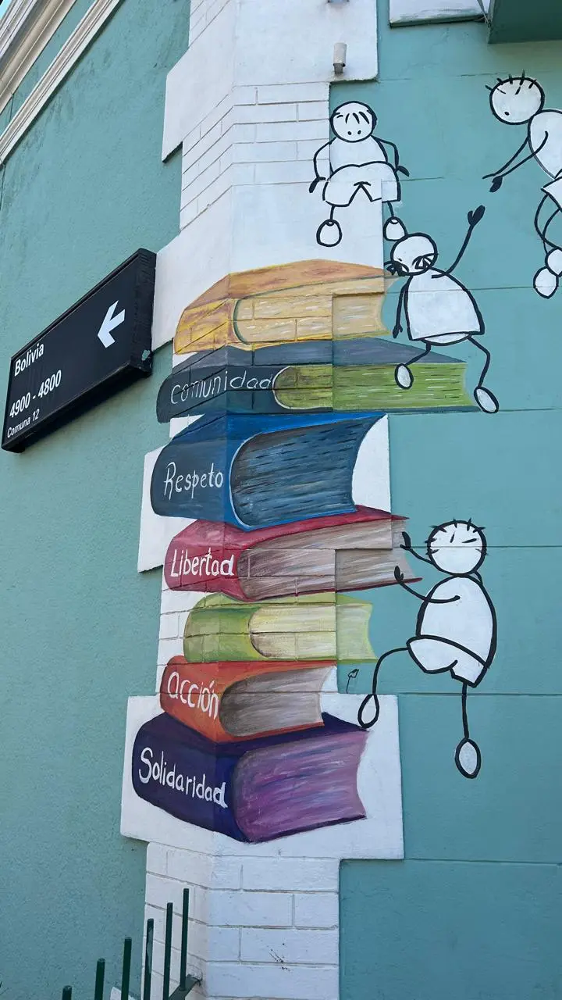
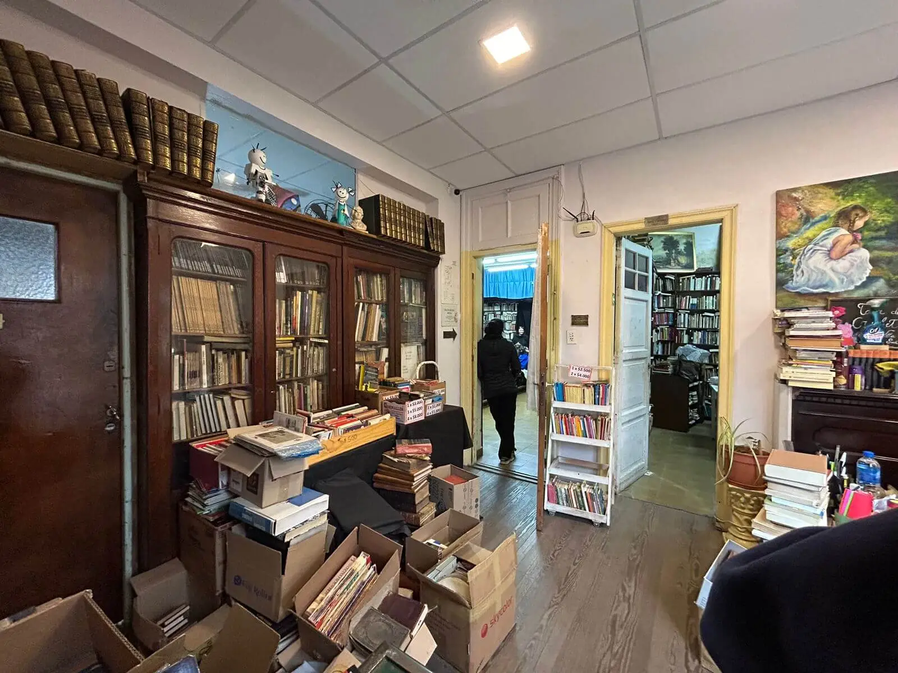
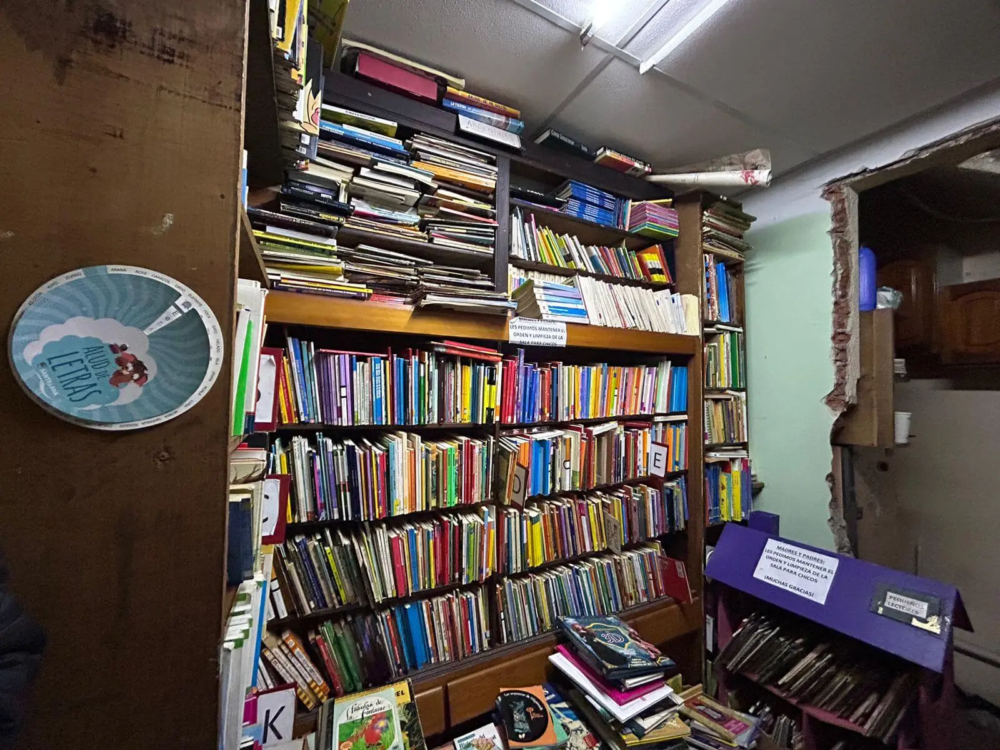
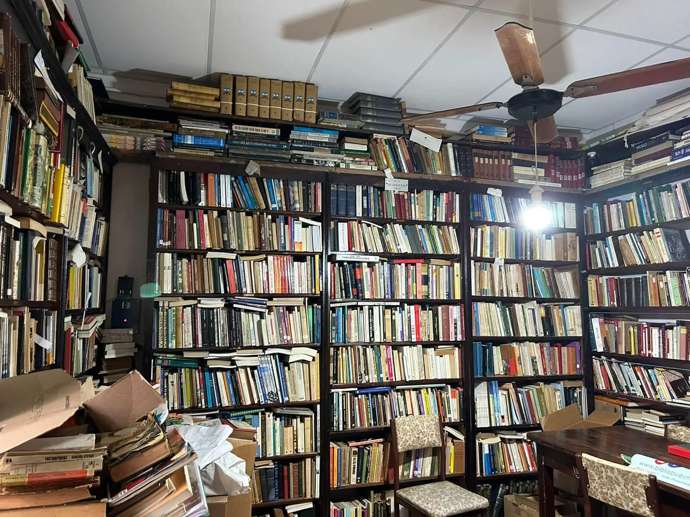
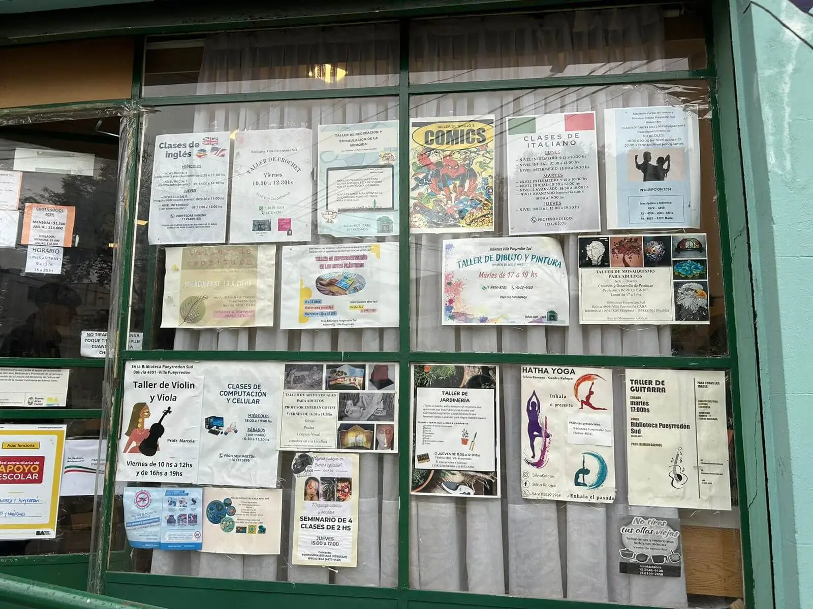
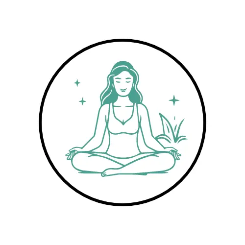
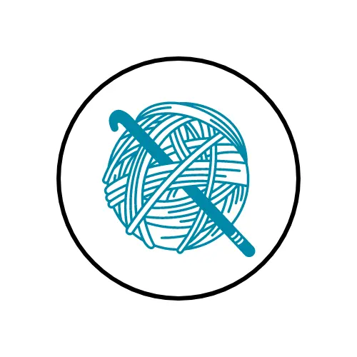

Asociación Vecinal de Fomento y Biblioteca Popular Pueyrredón Sud

Sobre Nosotros
¡Vení a descubrir la histórica Biblioteca Popular Pueyrredón Sud, fundada el 21 de marzo de 1920! Con el objetivo de brindar acceso a la información, fomentar la lectura y promover la cultura, la biblioteca es un modelo de organización comunitaria. Ofrecemos talleres artísticos y culturales como danzas folclóricas y mosaiquismo, además de apoyo escolar y cursos de idiomas para niños, jóvenes y adultos, fomentando el aprendizaje en toda la comunidad.
Días y horarios:
Lunes a viernes, de 9 a 13 h. y de 15 a 20 h.
Contactanos:
Teléfono: +54 911 4572-4450
Correo electrónico: bibliotecapueyrredonsud@gmail.com
Responsable del área: Melina Alicia Cavalo




Mirá más en nuestro Instagram
HACETE SOCIO Y MIRÁ TODOS LOS BENEFICIOS
ALGUNOS TALLERES

Yoga y meditación
Conéctate con tu cuerpo y mente a través del yoga y la meditación. Este taller promueve el bienestar, mejorando la flexibilidad, concentración y equilibrio emocional en un ambiente de calma.
Clase de italiano
Aprendé italiano de manera práctica y divertida. Con enfoque en la conversación y gramática básica, este taller te ayudará a sumergirte en la lengua y cultura italiana.

Crochet
Aprendé a tejer con crochet desde lo básico hasta técnicas avanzadas. Crearás prendas y accesorios únicos, fomentando la relajación y el desarrollo de habilidades manuales en un espacio acogedor.